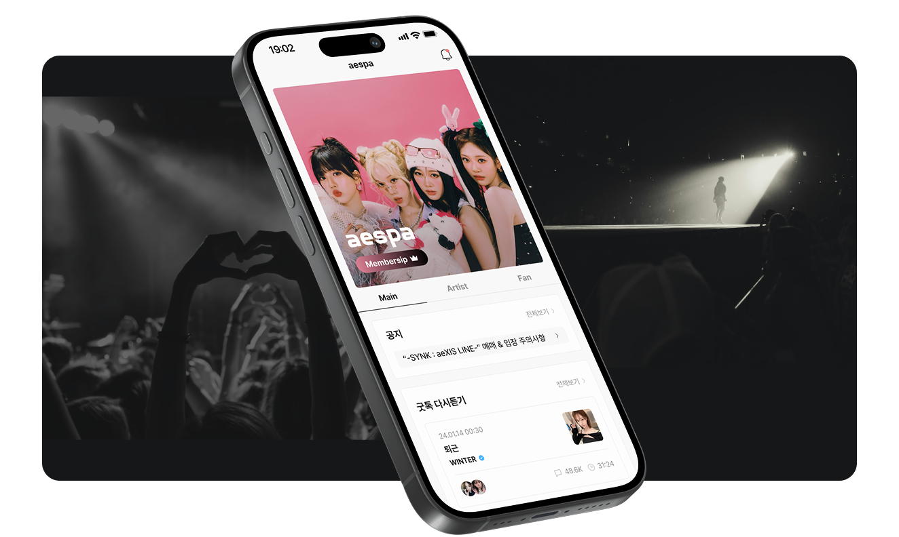

일단 오리가 떠오르지 않나요?
USER 01

GOODDUCK 3.0 UXUI Redesign Project
아티스트와 팬이 직접 소통할 수 있는 팬덤 플랫폼
굿덕은 아티스트와 팬을 연결하는 플랫폼으로, 기존에는 마스코트 캐릭터 ‘더기’와
강렬한 주황색 컬러를
중심으로 한 귀엽고 친근한 이미지를 강조해왔습니다.
그러나 실제 아티스트와 팬 인터뷰 결과,
특정 캐릭터성과 색감이
브랜드 정체성을 과도하게 한쪽으로 치우치게 만들어
다양한 아티스트와 조화를 이루지 못한다는 문제가 드러났습니다.
브랜드가 제공해야 할 본질적인 가치(아티스트와 팬의 관계)가 캐릭터성에 가려지고,
일부 아티스트는 굿덕과의 이미지 불일치를 지적하기도 했습니다.
따라서 브랜드를 보다 중립적이고 유연한 정체성으로 재정립하여,
다양한 아티스트와 어울릴 수 있으며 동시에 제품 전반의 디자인 경험을
일관되게 만드는 것이 필요했습니다.
USER RESEARCH
굿덕의 브랜드는 친근하고 귀여운 이미지로 인식되지만,
이는 특정 아티스트와의 조화를 방해하거나
서비스 본질(아티스트와 팬의 연결)을 희석시킬 수 있음이 확인되었습니다.
일단 오리가 떠오르지 않나요?
USER 01사실 저희 밴드 이미지를 생각해보면 굿덕이 주는 프렌들리한 느낌이랑은 좀 거리감이 있잖아요.
USER 02캐릭터에서 주는 것도 있고 그 어플 내 색감이라든지 그런 것들이 조금 말랑말랑한 느낌이 있는 것 같아요.
USER 03약간 너무 귀여운 이미지
USER 04Design Principles
모든 아티스트를 포괄할 수 있는 깔끔하고 정직한,
누구든 무난하게 이용할 수 있는 명료한 디자인으로 방향성을 정해
브랜드 디자인 원칙을 세우고 그에 어긋나지 않게 디자인했습니다.
깔끔함
UI 디자인은 군더더기 없이 깔끔하고
명료하며 깨끗해야 한다.
정직한
쓸데없는 기교나
독창적인 디자인이 없어야 한다.
공평한
모든 아티스트들을 환영하고
차별없이 디자인한다.
홈 화면은 가장 많이 사용하는 핵심 기능을 위주로 구성했습니다.
데이터 기준으로 굿톡은 전체 유저의 91.4%가 사용했고,
캘린더는 94.6%가 이용했습니다.
이에 따라 굿톡과 캘린더를 상단에 배치했습니다.
이전에는 굿톡이 중간 영역에 위치해 알림창을 통해서만 접근할 수 있었으나,
가장 많이 쓰이는 기능인 만큼 홈에서 바로 접근할 수 있도록 UI를 제공했습니다.
또한 캘린더 정보 역시 홈 화면에서 직관적으로 확인할 수 있도록 구성했습니다.
한편, 전체 유저의 12%만 사용하는 공지 영역은
제목만 간략히 노출하여 공간 활용도를 높였습니다.
아티스트를 소개하는 아티스트 프로필 화면입니다.
아티스트를 팔로우하기 전에 아티스트 정보를 확인할 수 있습니다.
어떤 아티스트가 라이브를 진행하는지 알고 들어오는 경우가 많기 때문에,
다른 영역의 비중을 위해 프로필 영역은 최소화하였습니다.
아티스트가 올린 사진은 별도의 영역에서 확인할 수 있도록 분리했습니다.
또한 아티스트 채팅 고정 기능을 추가해 중요한 대화가 묻히지 않게 했습니다.
더불어 필요할 경우 채팅창을 가려 불편함을 줄일 수 있는 접기 기능을 제공했습니다.
아티스트가 가이드 음원이나 데모곡,일상 녹음 등
본인이 올리고 싶은 녹음파일을 자유롭게 올리고
팬들이 감상가능한 ‘굿덕사서함' 화면입니다.
아티스트 전용 공간인 아티스트 메인에서 아티스트가 올린 피드를 확인할 수 있습니다.
스크롤을 내려도 아티스트 키컬러가 상단을 차지하고 있어
여전히 해당 아티스트의 공간에 있다는 느낌을 줄 수 있고
아티스트의 아이덴티티를 강조할 수 있습니다.
팔로우한 아티스트의 일정을
한눈에 확인할 수 있습니다.
선택한 아티스트의 일정만 보고싶으면
상단의 필터 아이콘에서 아티스트를
선택 가능합니다.
내 게시물, 북마크, 구매 상품, 멤버십 카드
아티스트 관리, 설정을
나의 화면에서 확인 가능합니다.